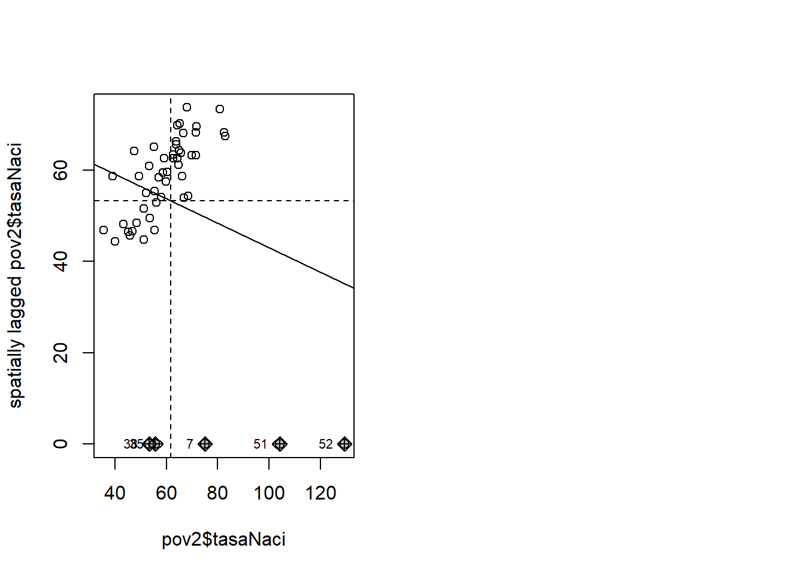

── Attaching core tidyverse packages ──────────────────────── tidyverse 2.0.0 ──
✔ dplyr 1.1.4 ✔ readr 2.1.5
✔ forcats 1.0.0 ✔ stringr 1.5.1
✔ ggplot2 3.5.1 ✔ tibble 3.2.1
✔ lubridate 1.9.4 ✔ tidyr 1.3.1
✔ purrr 1.0.4
── Conflicts ────────────────────────────────────────── tidyverse_conflicts() ──
✖ dplyr::filter() masks stats::filter()
✖ dplyr::lag() masks stats::lag()
ℹ Use the conflicted package (<http://conflicted.r-lib.org/>) to force all conflicts to become errors
library(spdep)
Cargando paquete requerido: spData
To access larger datasets in this package, install the spDataLarge
package with: `install.packages('spDataLarge',
repos='https://nowosad.github.io/drat/', type='source')`
Cargando paquete requerido: sf
Linking to GEOS 3.13.0, GDAL 3.10.1, PROJ 9.5.1; sf_use_s2() is TRUE
library(spatialreg)
Cargando paquete requerido: Matrix
Adjuntando el paquete: 'Matrix'
The following objects are masked from 'package:tidyr':
expand, pack, unpack
Adjuntando el paquete: 'spatialreg'
The following objects are masked from 'package:spdep':
get.ClusterOption, get.coresOption, get.mcOption,
get.VerboseOption, get.ZeroPolicyOption, set.ClusterOption,
set.coresOption, set.mcOption, set.VerboseOption,
set.ZeroPolicyOption
library(gamlss)
Cargando paquete requerido: splines
Cargando paquete requerido: gamlss.data
Adjuntando el paquete: 'gamlss.data'
The following object is masked from 'package:datasets':
sleep
Cargando paquete requerido: gamlss.dist
Cargando paquete requerido: nlme
Adjuntando el paquete: 'nlme'
The following object is masked from 'package:dplyr':
collapse
Cargando paquete requerido: parallel
********** GAMLSS Version 5.4-22 **********
For more on GAMLSS look at https://www.gamlss.com/
Type gamlssNews() to see new features/changes/bug fixes.
load("DatosIniciales.RData")#cargamos los datos del mapapov<-read_sf("shapefiles_provincias_espana/shapefiles_provincias_espana.shp", , options ="ENCODING=UTF8")nacimientos_2020M01 <- Nacimientos %>%filter(Periodo =="2020M01") %>%filter(Provincias !="Total") # Separar la columna Provincias en codigo_provincia y nombre_provincia#separate(Provincias, into = c("codigo_provincia", "nombre_provincia"), sep = " ", extra = "merge")#head(nacimientos_2020M01,10)#preparamos datos de poblacionpoblacion_2020M01 <- Poblacion %>%filter(`Edad simple`=="Todas las edades") %>%filter(Provincias !="Total Nacional") %>%filter(Sexo =="Total") %>%filter(Periodo =="1 de enero de 2020")#head(poblacion_2020M01,10)#preparams datos de IPCIPC_2020M01 <- IPC_Grupos %>%filter(`Grupos ECOICOP`=="Índice general") %>%filter(Provincias !="Nacional") %>%filter(`Tipo de dato`=="Índice") %>%filter(Periodo =="2020M01")#head(IPC_2020M01,10)#Unimos los datosdatos <-merge(x=nacimientos_2020M01, y=poblacion_2020M01, by.x="Provincias", by.y="Provincias", all.x=TRUE)#colnames(datos)datos <-merge(x=datos, y=IPC_2020M01, by.x="Provincias", by.y="Provincias", all.x=TRUE) %>%select(Provincias, Periodo.x, Total.x, Total.y, Total) %>%rename(Periodo = Periodo.x, Total.Nacimientos = Total.x, Total.Poblacion = Total.y, Total.IPC=Total) %>%# Separar la columna Provincias en codigo_provincia y nombre_provinciaseparate(Provincias, into =c("codigo_provincia", "nombre_provincia"), sep =" ", extra ="merge")#colnames(datoss)#unimos con el mapapov2 <-merge(x=pov, y=datos, by.x="codigo", by.y="codigo_provincia", all.x=TRUE) %>%mutate(tasaNaci =1E5*Total.Nacimientos/Total.Poblacion)colnames(pov2)
#CALCULA VECINOS DE TODO POLIGONO (1 SI, 0 NO)#pov<-pov[!is.na(pov@data$GINI),]### Matriz de vecinoscont.nb <- spdep::poly2nb(pov2) # from the spdep:: package
although coordinates are longitude/latitude, st_intersects assumes that they
are planar
Warning in spdep::poly2nb(pov2): some observations have no neighbours;
if this seems unexpected, try increasing the snap argument.
Warning in spdep::poly2nb(pov2): neighbour object has 6 sub-graphs;
if this sub-graph count seems unexpected, try increasing the snap argument.
#CREA LA W ESTANDARIZADA PARA EL SARARcont.listw <-nb2listw(cont.nb, style="W",zero.policy=T) # from the spdep:: packagepar(mfrow=c(1,2))# PARA VER DEPENDENCIA ESPACIAL (AUTOCORRELACION ESPACIAL)moran.plot(pov2$tasaNaci,listw = cont.listw,zero.policy = T)moran.test(pov2$tasaNaci,listw = cont.listw,zero.policy = T)
Moran I test under randomisation
data: pov2$tasaNaci
weights: cont.listw
n reduced by no-neighbour observations
Moran I statistic standard deviate = 3.4092, p-value = 0.0003258
alternative hypothesis: greater
sample estimates:
Moran I statistic Expectation Variance
0.273291739 -0.021739130 0.007489127
# SI NO HAY DEPENDENCIA ESPACIAL ES EQUIVALENTE A PERMUTACIONES (DA IGUAL SI ES ALICANTE O ALBACETE)

EN NUESTRO CASO EL P-VALOR ES >0.05 ASI QUE NO SE RECHAZA LA HIPÓTESIS NULA, LO QUE SUGIERE AUSENCIA DE AUTOCORRELACIÓN ESPACIAL (LOS VALORES DISTRIBUIDOS ALEATORIAMENTE)
Moran I test under randomisation
data: res_sem
weights: cont.listw
n reduced by no-neighbour observations
Moran I statistic standard deviate = -0.92963, p-value = 0.8237
alternative hypothesis: greater
sample estimates:
Moran I statistic Expectation Variance
-0.107336303 -0.021739130 0.008478178